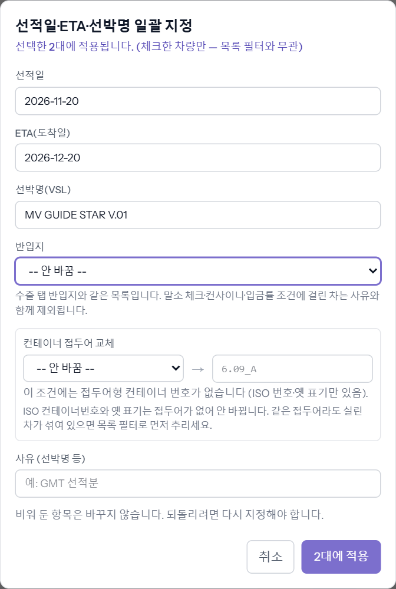
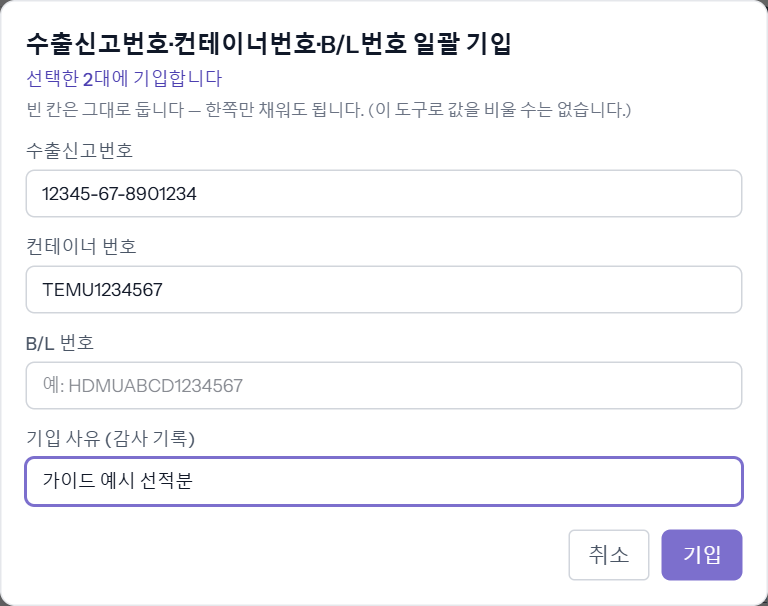

한 배에 실린 여러 대에 선적일 · ETA · 선박명(VSL) · 반입지, 수출신고번호 · 컨테이너번호 · B/L번호, 서류 파일을 한 번에 넣는 도구들입니다. 차량 목록에서 차를 체크하면 위 막대에 버튼이 생깁니다. 비워 둔 칸은 바꾸지 않습니다. 예시 차량 00가1131 · 00가1141.
① 선적일 · ETA · VSL · 반입지 — [선적일·ETA·VSL·반입지 일괄]
1단계
목록에서 차들을 체크 → 막대의 [선적일·ETA·VSL·반입지 일괄]
창 위에 「선택한 N대에 적용됩니다」가 보입니다. 넣을 칸만 채우고 [N대에 적용]을 누르면 「적용 N대 · 변경없음 N대 · 제외 N대」가 뜹니다.

- 반입지 — 수출 탭의 반입지와 같은 목록입니다. 말소 · 컨사이니 · 입금률 조건에 걸린 차는 사유와 함께 빠집니다(씬 「입금률 게이트에 막혔을 때」).
- 선박명 — 대상에 서로 다른 선박명이 섞여 있으면 경고가 뜨고, [그래도 덮기]를 눌러야 덮어씁니다. 다른 배의 차가 섞였으면 취소하고 조건을 좁힙니다.
- 컨테이너 접두어 교체 — 「6.09_A」 같은 접두어형 번호의 앞부분만 바꿉니다. ISO 컨테이너번호는 안 바뀝니다.
※ 차를 체크하지 않고 목록 아래 [선적일·ETA·VSL 일괄]을 쓰면 지금 검색 조건에 걸린 차 전부가 대상입니다. 진행상태는 선적일만으로는 바뀌지 않고 반입지 · 신고서가 있어야 다음 단계로 갑니다(예시 00가1131 은 판매중 그대로).
② 수출신고번호 · 컨테이너번호 · B/L번호 — [번호 일괄 기입]
2단계
막대의 [번호 일괄 기입] → 세 칸 중 필요한 것만 → [기입]
한쪽만 채워도 됩니다. 「기입 사유」는 감사 기록에 남습니다. [기입]을 누르면 「기입 N대 · 변화 없음 N대 · 제외 N대」가 뜹니다. 이미 서로 다른 번호가 들어 있던 차들을 하나로 덮게 되면 경고와 확인란이 나오고, 체크해야 진행됩니다.

※ 이 도구로는 값을 지울 수 없습니다 — 지울 때는 차 창에서 하나씩.
③ 서류 파일 — [서류 일괄 업로드]
3단계
막대의 [서류 일괄 업로드] → 서류 종류 하나 · 파일 → [업로드]
- 수출신고서(면장) · 체크빌 · B/L 문서 — 파일 하나가 선택한 차 모두에 저장됩니다. 신고서는 기본으로 파일만 올라가 「선적중」이 되고, 「통관」 체크박스도 함께 켜면 「통관완료」까지 갑니다(통관이 실제로 끝난 차만).
- B/L 문서를 고르면 「이 작업으로 N대가 거래완료가 되고 출고일이 자동으로 채워집니다」 경고가 나옵니다. 반입지가 없거나 미완납인 차는 사유와 함께 건너뜁니다.
- 말소증 — 차마다 다른 파일을 담습니다. 「말소」 체크박스도 함께 켜야 「말소완료」가 됩니다.
- 이미 파일이 있는 차는 「교체합니다」를 체크해야 바뀝니다. 컨테이너 등 번호가 섞여 있으면 확인란이 나옵니다.
알아 둘 것
- 세 도구 모두 대상은 체크한 차입니다(권한 밖 차는 빠집니다). 체크는 검색을 바꿔도 유지되니 끝나면 [선택 해제].
- 바뀐 값은 차마다 감사 로그에 남습니다. 되돌리려면 같은 도구로 다시 넣어야 합니다.
- 선적일 · ETA 가 들어가면 차량 목록 위 「🚢 운항중 · ⚓ 도착예정」 칩으로 골라 볼 수 있습니다.